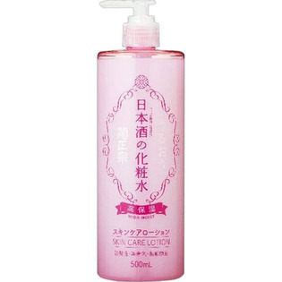

返回列表
产品名称：日本酒の化粧水 高保湿

菊正宗酒造 日本酒の化粧水 高保湿 ５００ｍｌ
メーカー 菊正宗酒造
JANコード 4971650800578
商品の特徴
うるおう
弱酸性・無着色・無鉱物油
- 成分・分量
- ＜配合成分＞
水、グリセリン、BG、コメ発酵液、グルタミン酸、アルギニン、ロイシン、セラミド3、セラミド6II、プラセンタエキス、アルブチン、グリチルリチン酸2K、ダイズタンパク、他
- 用法及び用量
- ＜使用方法＞
適量を手にとり、肌になじませてください。
コットンやティッシュペーパーに十分な量を含ませ、乾燥が気になる部分を5分程度パックするとさらに効果を感じていただけます。
顔はもちろん、全身用ローションとしてシャワー後やお風呂上りにたっぷりとお使いください。